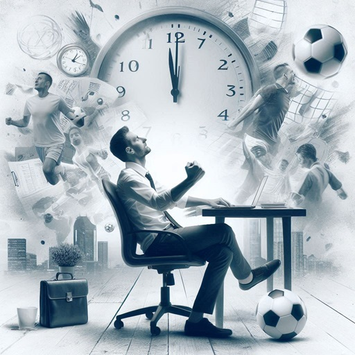

Adding Euro 2024 fixture list to your calender

Did you know that Euro 2020 had a cumulative live audience of 5.23 billion[1]?
Based on previous viewing figures, it’s expected that over 100 million will tune in for every match of Euro 2024.
So, wherever you are watching it, here is a quick way to add the fixture list to your calendar:
Import or add the following URL by Sky Sports to your calendar app of choice: webcal://www.skysports.com/calendars/football/fixtures/competitions/euro-2024?live=false
Here is the Sky Sports fixture calender page, should you encounter any problems.
[1] https://www.uefa.com/news-media/news/026d-132519672495-56a014558e80-1000–uefa-euro-2020-impresses-with-5-2-billion-cumulative-globa/
#data #euro2024 #football #productivity
Image generated by DALL·E 3